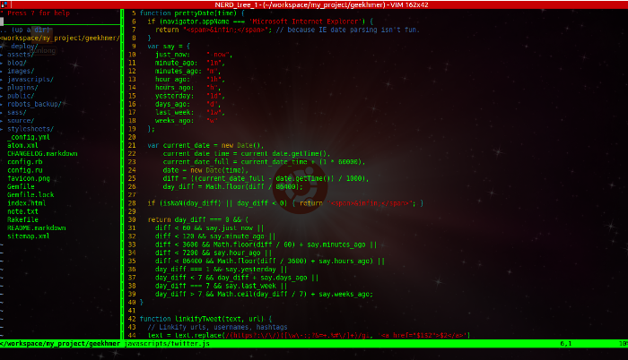
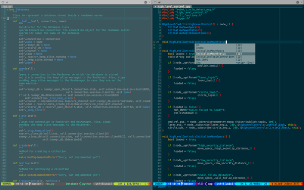

Can you
-Nishan Pantha
(PARADOX)
What is vim?
Not this
This...
This...
This...
...and This...

Text Editor
yay...
Vi
Improved
Text based User Interface
Why?

Type Less, Do more
Remove redundant movement
Increased coding speed
Available everywhere
Customization
Customization
plugins
Plugin Manager
vundle
vim-plug
vimrc
Unleash the power within
Learning Curve
Let's get started
Modal Behaviour
3 Popular Modes
Insert Mode
Normal Mode
Visual Mode
Insert Mode
Same as any other text editor
Normal Mode
Escape to normal
Normal is abnormal
What can you do?
navigation
change settings
split screens and windows
load, save
You can do anything
Basic Navigation
Move without arrows
Wordwise movement
w : forward to beginning of word
b : backward to beginning of word
e : move to end of word
Linewise movement
<number> gg : goto line no. number
gg : goto first line
G : goto end of the file
Linewise movement
0 : move to beginning of the current line
$ : move to end of the current line
Pagewise movement
CTRL-B : move one page up
CTRL-F : move one page down
Deletion
x : delete a single character under cursor
dd : delete current line
d <other motion> : delete with other motion
r <character> : replace current character by character
Multiply navigation
2h : move left by two characters
3l : move right by 3 characters
5j : move down by 5 lines
7k : move up by 7 lines
Multiply navigation
2w : move forward 2 words
3b : move backward 3 words
d3w : delete next 3 words
d3b : delete next 3 words
Multiple deletion
d3w : delete next 3 words
d3b : delete next 3 words
Normal Mode
Copy/Paste
yy or YY : copy(yank) current line
p : paste before the cursor
P : paste after the cursor
Cut
any delete motion
x / d / dd
Add other motion
Search
/
goto search mode
forward slash followed by letters
n
goto next searched word
N
goto previous searched word
Save/Quit/Load
:w save current file
:q quit current file after saving
:q! quit current file without saving
Visual Mode
v(small)
Character wise selection
V(capital)
Block wise selection
So ???
Invest in yourself
Don't start at work
Break Up
Steal your friends' dotfiles
Keep Practicing
vimtutor
http://www.openvim.com/Learn. Share. Smile
Carpe Diem
make it your own